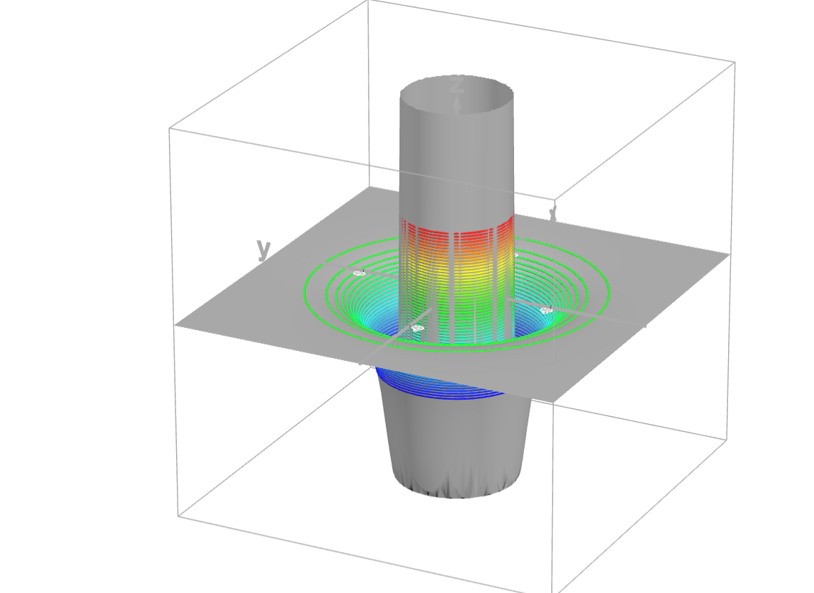

Molecular dynamics is fairly straightforward to simulate, what definitely isn't
is to do it fast. A bare-bones LJ simulation can take lots of hardware-specific optimization if the
goal is maximal raw performance. One such program's development process is detailed here, involving a CUDA and OpenGL
-based approach to the problem, capable of achieving upwards of 4MAtom-step/s in middling GPU hardware.
The program on itself is contained in this repository,
being compiled from the VS project (.vcxproj) in the Microsoft compiler.
System architecture
Any MD simulation can at its core be modelled as an ensemble (the particles and their data), an initializer (setting the
initial conditions), an interactor (giving forces and accelerations), and a numerical integrator. This implementation
also requires a graphical engine for displaying the simulation and setting its parameters on the fly.
Most of these components have fairly simple possible implementations (e.g. naïve random placement, each particle
interacting with every other, Euler integration, and so forth), but nearly all of which present great performance,
accuracy, and/or stability deal-breakers. As such, most of the development effort in such systems is spent on
optimizing for these variables, instead of on the Physics to which the ensemble must conform.
With the general model out of the way, it is now possible to look for a computational architecture
satisfying these requirements. Right off the bat, this is clearly a collection of embarassingly parallel problems.
Hence, a staged GPU architecture is optimal for such a thoughput-intensive workload, and I therefore applied it with
CUDA C++, essentially a gold standard for on-device parallel programming.
The graphical processing is slightly less straightforward, as there are a multitude of angles to approach it from, but
an extremely optimized engine, rendering on the GPU using GPU data (i.e. skipping the latency from round trips with the
CPU) at as little a cost as possible, is the ideal target. For such a task, Modern OpenGL has proven to possibly be the
best of middle grounds between higher- and lower-level (i.e. Vulkan) libraries, with enough low-level control for
more tailored buffer usage and draw calls, whilst still dealing with most of the hardware details on its own.
The Physics
The underlying equations behind the dynamics are fairly simple to understand, as only simple Lennard-Jones
potentials (making this an accurate 2D simulator for most noble gases) have been employed, being summarized in
the following form:
VLJ, ij = 4ε[(σ/rij)¹² - (σ/rij)⁶]
Fi = -∇Vi = mi d²ri/dt²
Where i and j are any two particles, rij their distance, VLJ, ij their potential, ε
the electric permittivity, σ the zero-potential distance, and
ri the position vector of a particle i. These are, in essence differential equations describing how
the particles accelerate given their current positions.
Here's a graph for the Lennard-Jones potential:

Section of a 3D plot of the LJ potential (σ = 3.0, ε=10.0) with contours.
Computational layout and implementations
Processing layout
Virtually all other design aspects hinge upon where each piece of data is processed. Given parallelism is the goal,
it is ideal to maximize it during runtime, but not necessarily during initialization.
As such, the initial, one-time steps in the setup are mostly conducted on the host (CPU), as are the supporting
operations (e.g. tuning constants, GUI elements), and the compute-intensive parts of the core simulation are done on the GPU.
Parallel operations can also be somewhat stacked, meaning they can be split into streams to an extent, as in the
following diagram:

Architectural diagram for the simulation as a whole. Note two details:
the "compute instances"step is actually first (to simplify the debugging process) in the
loop, and the input processing
(CPU-based) and graphical processing (GPU-based) are separate, but both use OpenGL handles
Data layout
With where the data will be used established, it is possible to organize it. As simply listing every structure used
would foreshadow some of what is to come without the proper context, this focuses on the general ordering
of information.
For minimal latency, information must be as close to its respective processing unit
as viable, not require any other transfers of adjacent data to happen along with its own, and utilize
as much of bus capacity as possible.
Thus, with the benefits of Object Orientation in mind, data was most heavily organized in Structures
of Arrays (SoA) as opposed to Arrays of Structures (AoS). Namely particle and (to be explained) cell data use
such schemes, with some initialization and utility functions being defined under their structs as well. Given
most of the initialization can be carried out on the host, both host and device vectors are mantained, and
initialized results on the former are transferred to the latter for computation.
Initial placement
A quite simple problem is that of procedural placement: how would one place objects at random such that their
distances are assured to be above a certain cutoff (avoiding instability problems). A simple
algorithm for such is the Poisson disk process, whereby space is split into cells, and particle placement occurs by
selecting a cell, selecting a position within the cell, and eliminating that cell and all those around it for the
other particles.
Implementing this is quite simple, with the only caveat being the use of std::deque instead of std::vector
for the Poisson cells, as it supports the arrays in the millions of cells that are required to place tens of thousands
of particles.
The interactions
It is not viable to compute all interactions ocurring within a real ensemble. The reason for that is simply that it
does not scale, with the number of interactions growing quadratically with the number of bodies, meaning ten
thousand particles, barely a medium-scale scenario, would involve a hundred million force calculations for each
frame, ridiculously many.
There is a shortcut, though: as forces become irrelevant as distance increases, one can reasonably only compute
interactions with neighboring particles and still get accurate behavior. This leads to another prerequisite: A
neighbor list for each particle; the issue being the fact lists tend to be fairly expensive to obtain, with O(N²).
Here comes another trick: divide space up into linked cells, such that it is easy to determine each particle's cell
given its coordinates. After that step, it is possible to list all bodies (their indices) in an array, and sort that array
using the aforementioned data as a key, such that it orders particles according to their cells. All that remains is to obtain
where each cell's particle list begins (each cell's offset) in the latter array, which is achievable by "scanning"
it in a specific way, as will be made clearer later.
As for specific implementation, I went with the thrust library, using the following code:
- void order_particles_d(thrust::device_vector cell_d, cudaStream_t& sortStream) {
- thrust::sequence(thrust::cuda::par.on(sortStream), ordered_particles_d.begin(), ordered_particles_d.end());
-
- thrust::sort_by_key(thrust::cuda::par.on(sortStream), cell_d.begin(), cell_d.end(), ordered_particles_d.begin());
- }
-
- void getOffsets(Particles& particles, int numparticles, int x_cells, int y_cells, cudaStream_t& sortStream) {
-[[MORE]]
- thrust::device_vector filled_cells;
- thrust::device_vector keys_d(numparticles); //keys will be ordered, but with the value of each index being the cell at which ordered[index] is. maps 'ordered'
- thrust::gather(thrust::cuda::par.on(sortStream), ordered_particles_d.begin(), ordered_particles_d.end(), particles.cell_d.begin(), keys_d.begin()); //turns 'keys' into exactly that
-
- // lower_bound: for each cell index, find the first index in keys_d where it appears
- thrust::lower_bound(thrust::cuda::par.on(sortStream),
- keys_d.begin(), keys_d.end(), // sorted keys (length numparticles)
- thrust::make_counting_iterator((size_t)0),
- thrust::make_counting_iterator((size_t)(x_cells+2)*(y_cells+2)), // query keys (i.e. the cell values themselves)
- offsets_d.begin());
- offsets_d[(x_cells + 2) * (y_cells + 2)] = numparticles; //all non-filled (or, in this case, inadequate) cells get a value of numparticles, which is an impossible index in ordered[]
- }
-
- void countParticlesPerCell(cudaStream_t& sortStream) {
- thrust::transform(
- thrust::cuda::par.on(sortStream),
- offsets_d.begin() + 1, // offsets[1..numcells]
- offsets_d.end(), // end
- offsets_d.begin(), //offsets[0...numcells-1]
- particles_per_cell_d.begin(),
- thrust::minus() // counts[i] = offsets_full[i+1] - offsets_full[i]
- );
- }
After organizing the particles, they must be put to interact. This is theoretically achieved with a simple CUDA kernel,
whereby each particle collects the position data for all those in its own and neighboring cells and uses it to compute
accelerations. But that comes at the cost of neighboring particles accessing the same global memory, which is
orders of magnitude slower than on-die shared memory.
A solution is to use tiling, such that neighboring particles access the neighbor position data from shared memory, further
reducing the kernel's latency at the cost of increased complexity. Also noteworthy is the use of reduced-instruction
operations for branchless "clamping" of the distances, along with the absence of square root operations, which greatly
slow calculations down. Just keep in mind this is a softer clamp, where after a cutoff
accelerations decline linearly with distance (mantaining their sign) instead of dropping to zero.
Integration
Here's another tricky one: simple Euler integration won't cut it, as it is inherently unstable. Essentially, simply
calculating Δv = aΔt will tend to overshoot both velocity and the positions, increasing errors in total
internal energy exponentially. As such, a simple fix is
to adopt a Verlet Integrator (essentially second order Runge-Kutta), as the following:
x(t + Δt) = x(t) + v(t)Δt + a(t)Δt²/2
v(t + Δt) = v(t) + [a(t) + a(t + Δt)]Δt/2
Other optimizations in CUDA kernels
Other techniques applied were bit masking for Single Instruction for Multiple Data (SIMD) optimization, along with extensive
function inlining, which decrease call overhead at the cost of greater register pressure (i.e. threads using more of their
precious local memory in local variables). Beyond that this mostly consists of micro-optimizations involving Instruction
reduction, which played some role throughout the design process.
Computer Graphics
Despite not being crucial for the simulation itself, it is probably the single most crucial debugging element in the program,
meaning its early development preceded that of the physical systems. Visualizations should not be burdensome on the
overall architecture, and this was the fundamental principle behind its development. The performance of this entire system is
that of its weakest link, and graphics should not be it.
The core graphical elements
The particles were modelled as simple circles (actually decagons) in space. Despite that simplicity, it remained an open question
on how to draw tens of thousands of particles without impacting overall performance (draw calls are expensive). Towards that goal
were employed instancing (whereby all particles are as variants of a given "base particle" all at once), and CUDA-OpenGL
interoperability (i.e. transferring data within the GPU instead of having a round-trip to the CPU and back).
Consequently, the graphics pipeline was mostly left unchanged, despite the inherent degree of complexity of Modern OpenGL.
The rendering was split into an initialization stage, wherein the shader program was compiled, base attributes were loaded, and
instance attribute pointers linked, and a "draw" stage, loading data into the instance VBO (vertex buffer object).
The graphical user interface
The GUI also employed intancing, but was deployed as CPU-based (asynchronously) to avoid interfering with the GPU.
It was designed with preacticality in mind, and has some key-based controls (H for help, R for resetting a variable,
et cetera) and sliders for variable tuning.
Performance & results
Testing in fairly low-end hardware (RTX 2060 GPU, Intel core i7, and constrained RAM), it was possible to consistently a
chieve ~4.1 MAtom-step/second in a simulation of 60'000 particles (each frame taking 14.5 ms on average), with
potential for improvement by simply being less conservative with the sorting rate (this measure is from sorting cells once
every four frames, whilst some simulators sort once every more than twenty). The overwhelming majority of compute time stems
from the interaction force calculations (~81% in the last tests), with the rest being almost completely spent sorting.
As such, I conclude this rather lengthy project with a decently-performing overall system, with all the hooks necessary for
further improvement and refinement. Although this is a hardware-specific design, it is hopefully general enough to
work on virtually all NVidia devices with commensurate performance.